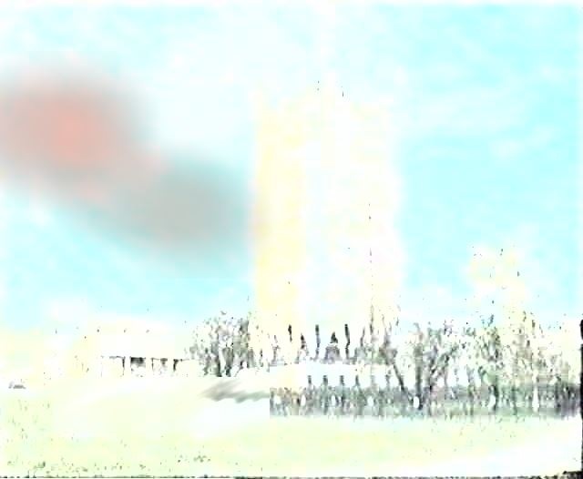

Навигация: Главная О нашем издательстве Главная О нашем издательстве
|
Жители Тихорецкого и Светлановского проспекта жалуются на сбои в работе компьютеров. Во всём виновата башня НИИ "Робототехники".
19 апреля 2021. В государственную службу "0004", уже не первую неделю поступают сообщения о сбое компьютеров на пересечении Светлановского и Тихорецкого проспекта, а так же в начале проспекта Науки. Власти не понимают, в чём дело. Редакция газеты "16 троллейбус" попыталась выяснить, в чём дело? и поехала в сад Бенуа вместе со специалистами из НИИ "Гронодаль". …Вроде всё прилично, и как обычно. Ездят трамваи, пешеходы и велосипедисты неспешно прогуливаются в парке. Однако, стоит нам вооружиться камерой, работающей в диапазоне 4 ггц, и навести её на здание НИИ, как всё становится ясно - на крыше здания поселилось неведомое существо, невидимое в оптическом диапазоне.  Как предполагает ведущий астрофизик "Гронодаля" Евгений Мумбашвили - это существо прилетело к нам из соседней галактики - и привлек его, скорее всего, комфортный радиодапазон. "Всё дело в том, что большой тройкой операторов в Петербурге сейчас строится сеть 5G" - рассказывает астрофизик. "5G работает на диапазоне 4,7-4,9 ггц, что скорее всего является родной частотой для данных существ, и им попросту здесь комфортно." "Данные существа абсолютно безвредны для человека" - комментирует ситуацию инженер телемеханики Сергей Шамошкин. "Существа живут только в радиодиапазоне 4 ггц при повышенной гравитации, простой человек не может с ними взаимодействовать. Для человека они точно так же прозрачны как радиоволны, или звук. Так же они не могут видеть человека, или взаимодействовать с ним в привычном нам понимании". Подключается к комментированию и Олег Терчаев - специалист по наблюдению за гравитационными волнами: НИИ "Робототехники" и НИИ "Гронодаль" в ближайшее время предстоит изучить новых существ, и попытаться подружиться с ними. А пока - всех жителей возле сада Бенуа просят заземлять свои компьютеры для минимизации воздействия электромагнитных помех. |